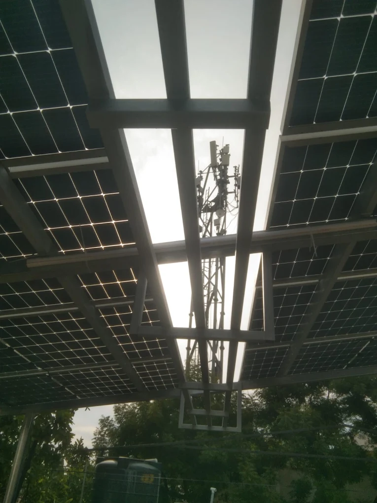

01
The mast
Base, cables, and a walking gap stay open. Modules do not sit on the steel.
Perungudi blocks on OMR, and the house streets
On many blocks along Old Mahabalipuram Road the terrace already carries a telecom mast, outdoor air conditioners, or both. Modules stop short of that equipment and of the shadow it casts. Toward the lake, older houses often keep a cluster of tanks in the sunny corner. Those stay. The visit is from Madipakkam and is free.

What is already up there
A mast is not a water tank. It has cables, a base, and a shadow that moves a little through the day but never leaves the terrace. We keep a gap a technician can walk, and we do not lay glass across that metal. Outdoor units of the air conditioners stay reachable too. A gap that looks empty in a photo may be the only way to service them.
Off the highway, toward Perungudi lake, the roof is more often a house. Extra floors usually mean several tanks grouped where the sun is best. They are not shifted to make a prettier row. Modules take the slab that remains, and only if that patch is worth using. City-wide module choice is on panels for a Chennai home. A park tree line or a workshop shed is the Guindy case. Here the obstacle is equipment the building already needs.
Mast clearance keptTanks stay putVisit from MadipakkamDrawn around what stays
Base, cables, and a walking gap stay open. Modules do not sit on the steel.
The strip the mast shades through the day is left empty, even if the noon photo looks bright.
On a house roof the cluster in the sunny corner stays. The row uses only the slab beside it.
Central assistance needs cells and modules made in India. Eligible homes can receive up to ₹78,000. The amount follows the scheme on the day you apply.
Who can proceed
An owner on the older streets can decide alone. A flat on Old Mahabalipuram Road uses a common terrace only after that use is in writing, and only if the mast and the air conditioners can still be serviced. A balcony over the road is not a mounting place.
How the frame stops short of equipment is on solar panel installation. Modules you already bought are labour, quoted on installation services. The subsidy gap is on panel and price. NDCR against DCR is in that guide before an import is confirmed.
Before a layout
Yes. The roof visit is free. A recent bill is enough to start. You can stop after we mark what must stay on the terrace. No modules are ordered that day.
Only in gaps that still see the sky, and only if a technician can reach the mast and its cables. We do not cover the mast or the strip it shades.
No. They stay. Modules use the slab that is left, if that patch is large enough to be useful.
Yes. Cells and modules must be made in India. Eligible homes can receive up to ₹78,000, subject to the scheme on the day you apply. NDCR is only if that assistance has already been given up.
A free visit from Madipakkam. We mark what must stay, the shadow it casts, and whether the plant should be DCR.
Request your free quote →